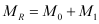
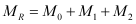

|
|
|


根据 Schaeffler 2017 (INA, FAG) 计算
为了定义总摩擦力矩，必须知道在工况温度下的速度、载荷、润滑类型、润滑方法和润滑剂的粘度。
用于总摩擦力矩的公式：
 | (27.1) |
M0：不依赖速度（载荷无关）的摩擦力矩
M0 是由润滑剂中的流体动力学损失决定的。它在快速旋转且负载较轻的轴承中尤其高。该值 M0 取决于润滑剂的数量和粘度以及滚动速度。
M1：载荷依赖摩擦力矩
M1 是由接触表面的弹性变形和部分滑动决定的，尤其是在缓慢旋转且负载较大的轴承中。该值 M1 取决于轴承类型（轴承依赖的指数用于计算），决定摩擦力矩的载荷和平均轴承直径。
对于承受轴向载荷的圆柱滚子轴承，公式中还需计入一个附加的轴向载荷相关摩擦力矩 M2。
 | (27.2) |
M2：轴向载荷依赖的摩擦力矩
对于圆柱滚子轴承，M2 取决于系数 kB、轴向载荷和轴承的平均直径。
对于采用 TB 设计的轴承（通过新的计算和生产方法实现更好的轴向承载能力），轴承因子 f2 显示在主目录的专用图表中。
用于计算的系数 f0、f1（见 摩擦系数 f0 和 f1 一章）和 P1（取决于轴承类型和轴承载荷的值）已取自 DIN ISO 15312。公式、指数和系数已取自 Schaeffler 目录 2017 版。
Calculation according to Schaeffler 2017 (INA, FAG)
To define the total moment of friction, the speed, load, lubrication type, lubrication method and viscosity of the lubricant at operating temperature must be known.
Formula used for the total moment of friction:
(27.1) |
M0: speed-independent (load-independent) moment of friction
M0 is determined by the hydrodynamic losses in the lubricant. It is especially high in quickly rotating, lightly loaded bearings. The value M0 depends upon the quantity and viscosity of the lubricant, as well as the rolling speed.
M1: load-dependent friction moment
M1 is determined by the elastic deformation and partial sliding in the surfaces in contact, especially due to slowly rotating, heavily loaded bearings. The value M1 depends on the bearing type (bearing-dependent exponents for the calculation), the decisive load for the moment of friction and the mean bearing diameter
For axially loaded cylindrical roller bearings, an additional axial load-dependent moment of friction, M2 , is added to the formula.
(27.2) |
M2: axial load-dependent friction moment
M2 depends on a coefficient, kB for cylindrical roller bearings, the axial loading and the bearing's mean diameter.
For bearings with a TB design (better axial load capacity achieved using new calculation and production methods), bearing factor f2 is displayed in a special diagram in the main catalog.
Coefficients f0, f1 (see chapter Friction coefficients f0 and f1) and P1 (values that depend on the bearing type and bearing load) used for the calculation have been taken from DIN ISO 15312. The formulae, exponents and coefficients have been taken from the Schaeffler Catalog, 2017 Edition.